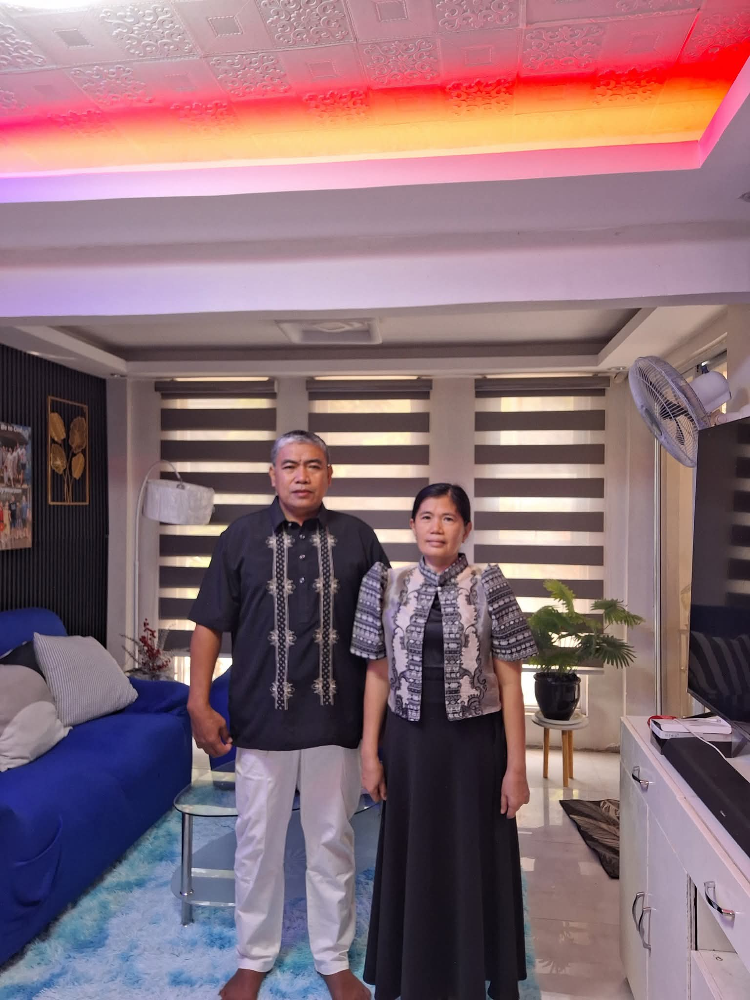
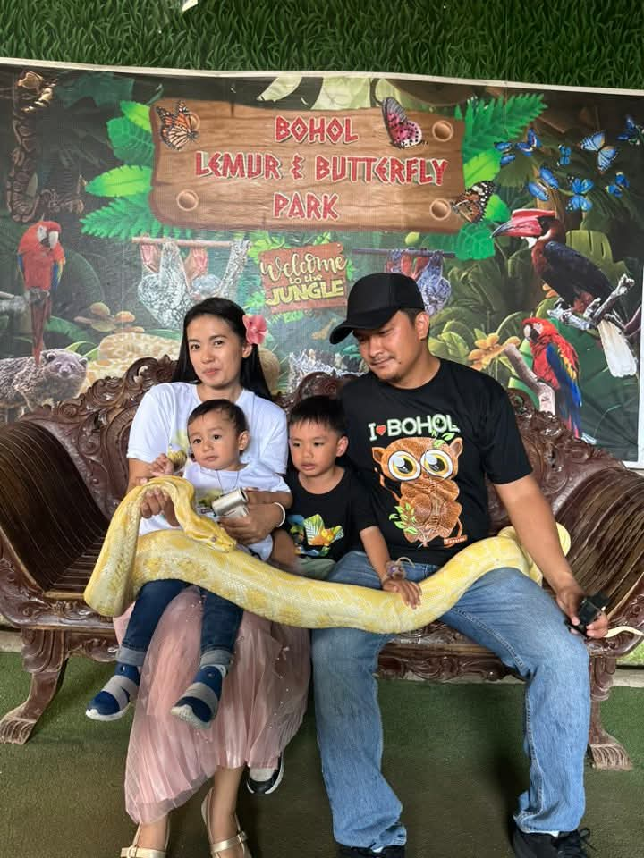
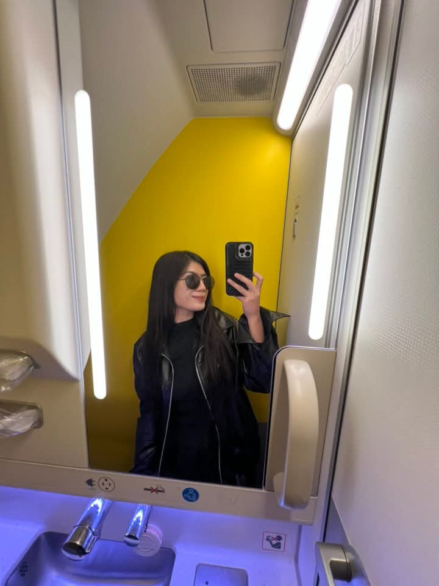
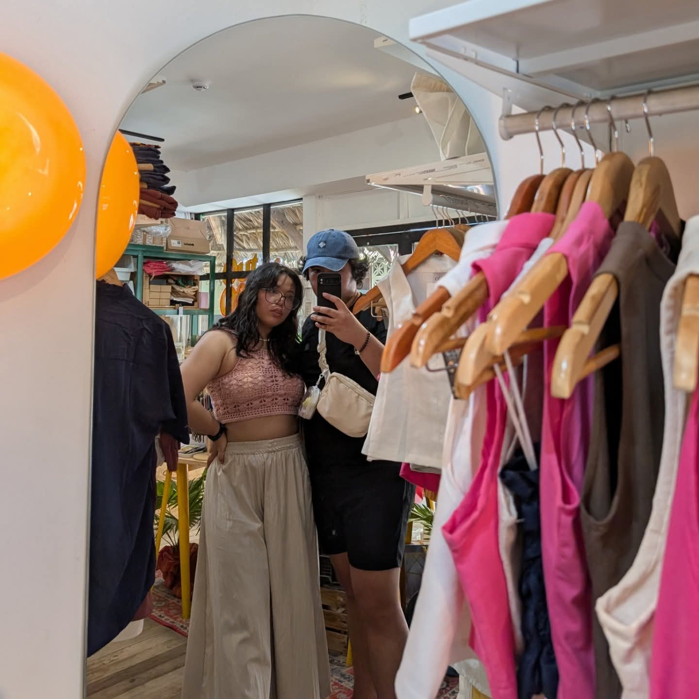
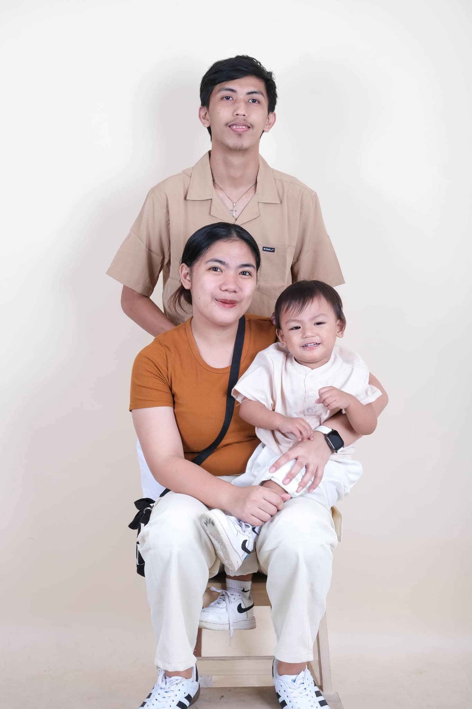
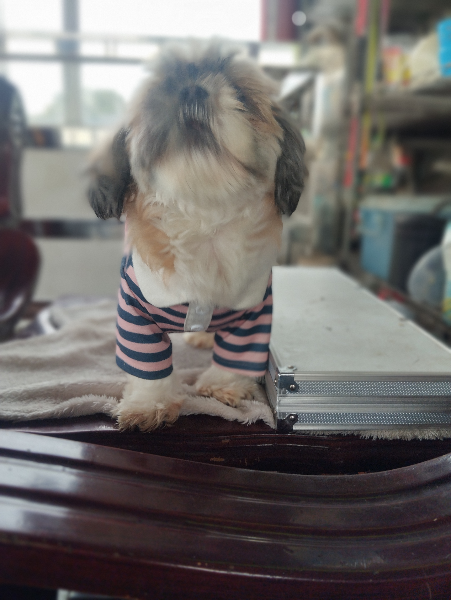
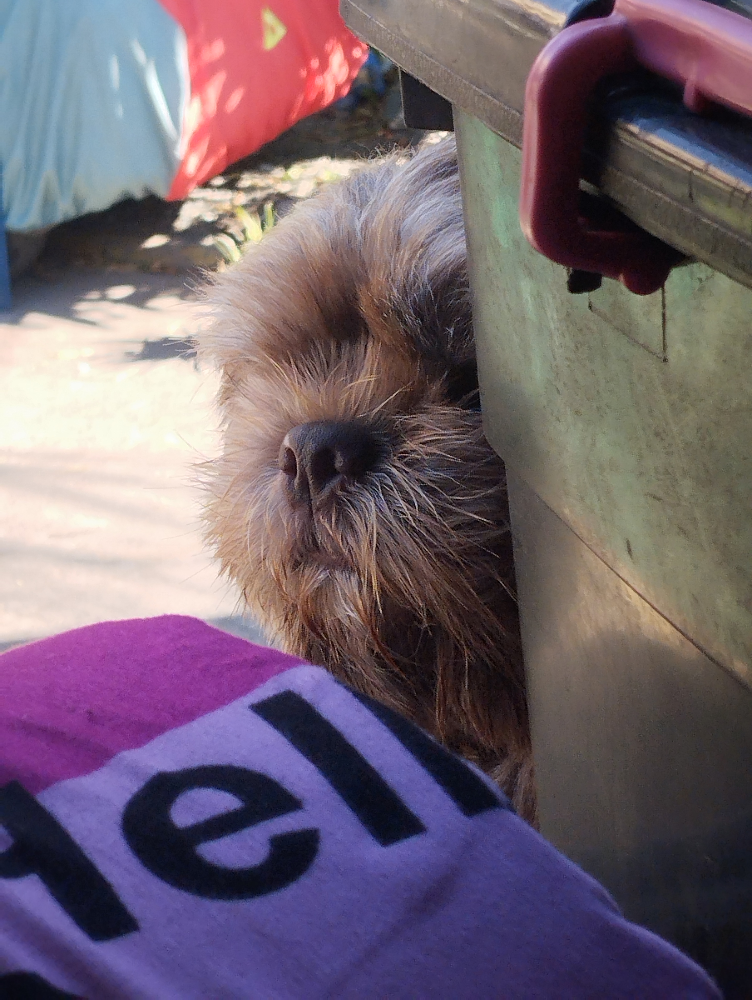
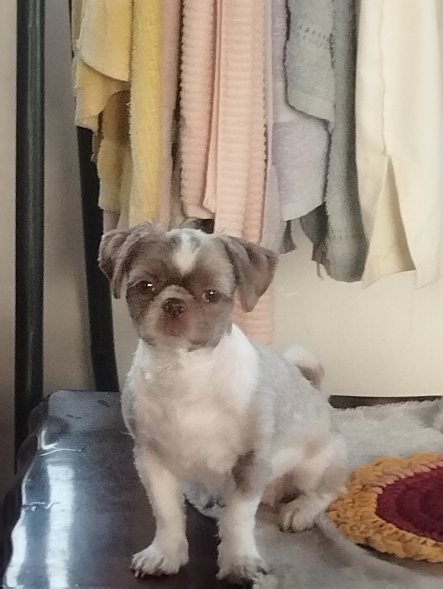

My Family

Jose Marzan and Rowena Marzan
So I have two Parents, Four siblings, and three pets. My Father's name is Jose Obrador Marzan, he works at mercury drug as a supervisor. While My Mother's name is Rowena Marzan, she used to worked for a jewerly store, but now she is a housewife now. My father is hardworking man, which means his rarely at home, but when he does go home, he makes sure i'm doing alright on my grades and housework. For my mother, she prepares the food, washes our clothes. basically any house related work, she manage it with the help of me. She calls my name anytime is she ordering me, which makes sense since all of my siblings have a job now, while I am still at school. Of course i will be agitated the more times she orders me especially when she made buy something, and then forget there's one more item to buy and then i have to go outside again. but I just ignore the annoyance and do the task at hand.

Jean Murielle Marzan
Now about my siblings. Jean Murielle Marzan is my oldest sister, she is for now a housewife, but her old job is a pharmacist. she has a husband, Adrian and they have kids, Lucas and Kian. In the past, My sister lives at our home to help take care of the kids due to her husband, andrian working abroad. Me and Mother would help her take care of the children, either feeding them, entertaining them, or making them fall asleep. while my sister work in the night shift.

Joyce Unice Marzan
My second older sister is Joyce Unice Marzan, Her job is a License Key Support, I don't know what that means but it sounds important. but from my knowledge she wants to be a flight attendant, Because when we are going to the gym, she tries to get taller by exercising her legs due to failing her test because of her height, she also has side job of selling clothes. And her hobbies is cooking unique foods, in our household we call her dish a "experiment". Because she liked to cook in different styles.


Joewen Abraham Marzan
Joewen Abraham Marzan is my only older brother in this family, I am very close to my brother, he gives me advice on my school problems and social problems. He makes sure I stay in the right path towards my life. His job is a video editor, he does for other people, but he has a youtube channel called Idle Hobbies and a secondary channel joe ride collective. and he has girlfriend, Pia Frances. My brother still lives with our parents with her girlfriend, they are staying at the third floor of our house. they have been together for 4 - 5 years now. I sometimes visit their room when they are away to chill out, even sometimes my brother's computer, of course with permission. I sometimes i get involve in his videos like this image at the bottom where we went to an event to take place in a nerf war.

Jowyna Reem Marzan
And finally, my final sibling is Jowyna Reem Marzan. she is my third older sister and when i was little, we sometimes get into fights and agruments, but when we got older, we got into less and less arguments. She has a husband and one child. her husband's name is Patrick De Leon and her child's name is PJ, short for Patrick Joseph my sister has been in a relationship in 5 years. and same like what like my oldest sister, she once lived with our parents, which means i have help out taking care of pj, and oh boy he was annoying, and playful. he keeps throwing his toys at me, and keeps slapping me. and everytime his mother is away, he cries alot and i have alone have to deal with it. he is very cute but very unwieldy.



Dogs
I have three dogs, one male, two female. One of them is named Only, Because she was the only one who has born from the original dog we had, she has white and brown color on her fur and very fat, and then only gave birth to 5 more puppies, we kept the male one named dior or theodore if you liked that name. he is a brownish and darkish dog, compare to our other dog, he knows to climbs the stairs, which is a problem since he pee a lot, so temporary solution is to make him wear a diaper. and for the final dog is serina, she is the smallest of all of my dogs but she is definitely the craziest of them all.